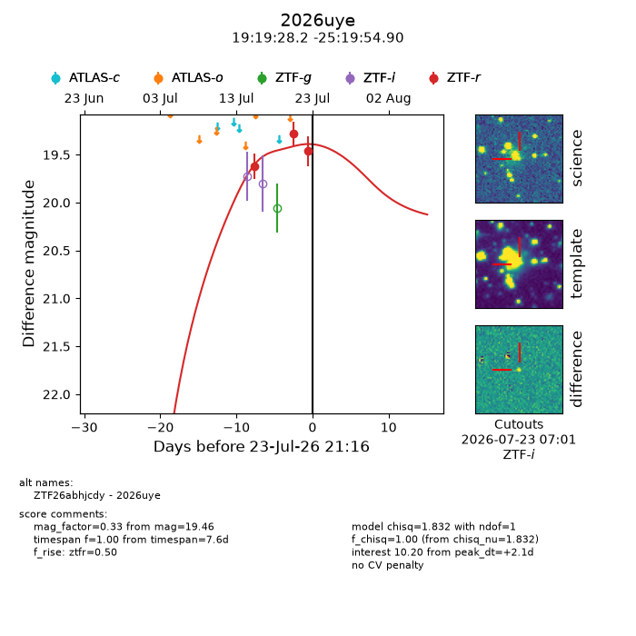
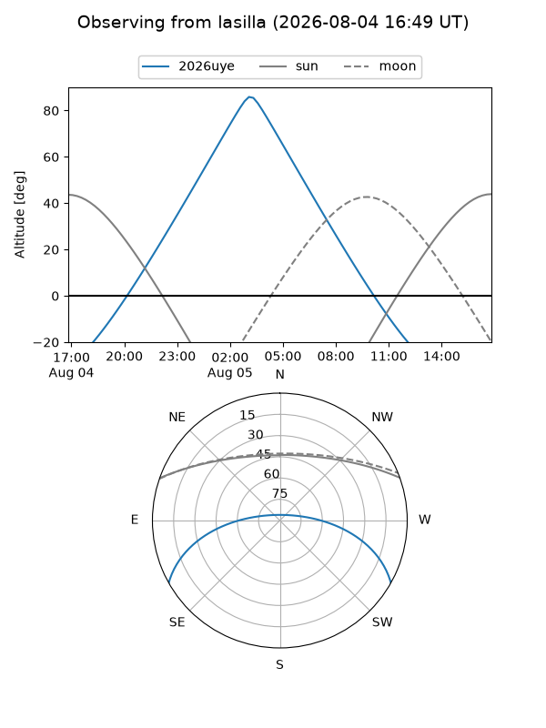
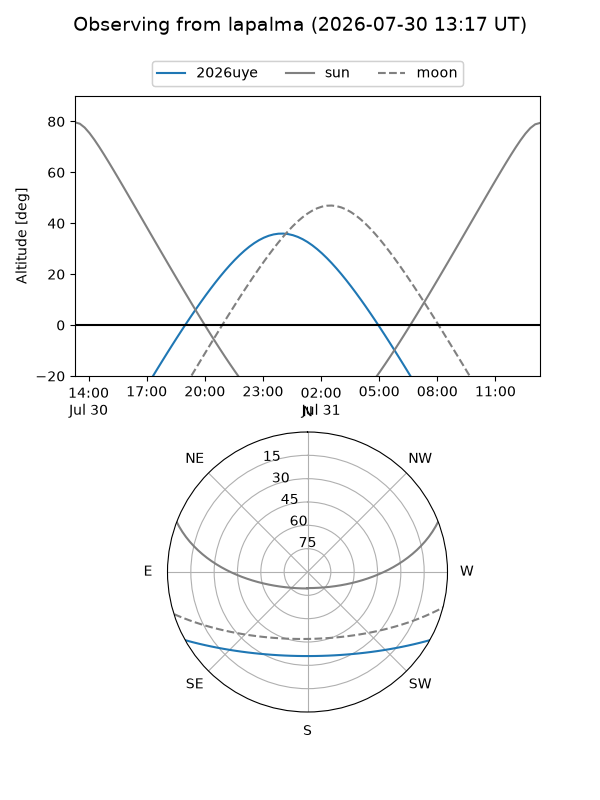
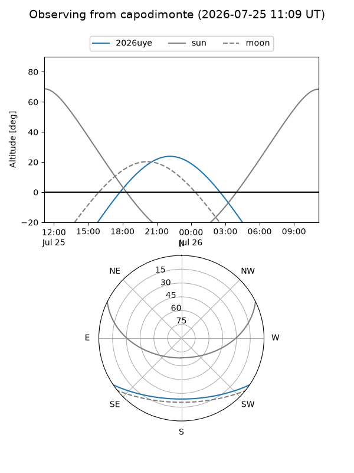
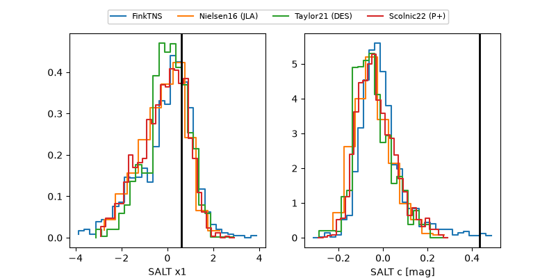

2026uye
Target 2026uye at 2026-07-23 21:19
Aliases and brokers:
FINK-ZTF: ztf.fink-portal.org/ZTF26abhjcdy
Lasair-ZTF: lasair-ztf.lsst.ac.uk/objects/ZTF26abhjcdy
ALeRCE-ZTF: alerce.online/object/ZTF26abhjcdy
YSE-PZ: ziggy.ucolick.org/yse/transient_detail/2026uye
TNS name: wis-tns.org/object/2026uye
Direct TNS query: direct search
alt names
ZTF26abhjcdy (ztf,fink_ztf)
2026uye (tns,yse)
Coordinates:
equatorial (ra, dec) = 289.8676,-25.33192
equatorial (HMS+DMS) = 19:19:28.22,-25:19:54.90
galactic (l, b) = (12.7071,-17.05227)
Flags:
TNS type: nan
peak dt: +2.1
Photometry:
last ztfr=19.46
3 ztfr detections
Lightcurve

Visibility



Additional plots
